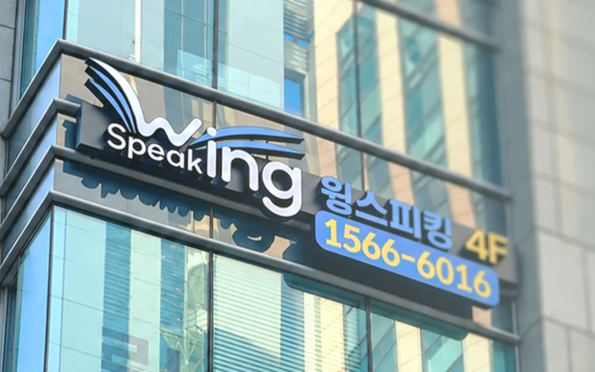
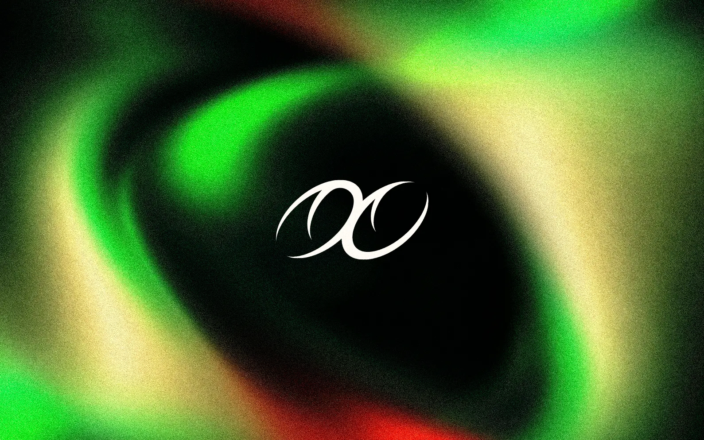

CHART 01 — MAIN
윙스피킹 WingSpeaking
“영어에 날개를 달다” — 강남 유학 전문 어학원. 브랜드 컨셉 논의부터 BX 디자인, 웹 디자인과 빌드(약 40페이지), 온라인 콘텐츠와 마케팅까지 맡았습니다.
- TREATMENT
- Branding · Web · Contents · Graphic
- VITALS
- 2호점 개원 · 3호점 준비
- PERIOD
- 2022 — 2024
소생 [revive] : 되살아나다, 활기를 되찾다
Brand Revival Portfolio
Brand & Content Designer 유경훈
브랜드의 메시지부터 시각 시스템, 콘텐츠와 디지털 경험까지 연결하는 디자이너.
기획부터 디자인, 촬영, 웹, 검색 · AI 마케팅까지.
브랜드가 고객을 만나는 전 과정을, 혼자 끝까지 만듭니다.
20개 이상 브랜드의 로고 · BX 가이드 · 슬로건 · 컬러 체계, 리플렛 · 책자 · 굿즈까지
ROKAF · WINGSPEAKING · MOGAK 외 → CH 02 Content & Detail Page콘텐츠 · 상세페이지 100%상세페이지 · 카드뉴스 · 블로그 · SNS 콘텐츠를 직접 기획하고 제작
MOGAK · WINGSPEAKING → CH 03 Film & Photo Direction영상 · 사진 디렉션 580만 조회모집 홍보영상 기획, 인물 촬영 디렉션 · 리터칭, 매장 촬영
ROKAF · WINGSPEAKING → CH 04 Web Build웹 기획 · 구축 40페이지홈페이지 기획 · 디자인 · 빌드를 혼자, 이 포트폴리오 사이트도 직접 코딩
WINGSPEAKING · THIS SITE → CH 05 Search · AEO Marketing검색 · AI 마케팅 1위‘강남 스피킹’ 검색 최상단, ChatGPT · Gemini가 추천하는 어학원, 리뷰 275건
WINGSPEAKING → CH 06 AI WorkflowAI 워크플로우 9개 툴Claude · ChatGPT · Midjourney · Higgsfield · Runway 등으로 기획부터 제작까지 가속
ALL CASES →
CHART 01 — MAIN
“영어에 날개를 달다” — 강남 유학 전문 어학원. 브랜드 컨셉 논의부터 BX 디자인, 웹 디자인과 빌드(약 40페이지), 온라인 콘텐츠와 마케팅까지 맡았습니다.

CHART 02 — MAIN
공군모집 브랜드 아이덴티티 리뉴얼 및 통합 커뮤니케이션 시스템을 구축했습니다. 리브랜딩, 홍보영상 기획 및 제작, 온·오프라인 캠페인 비주얼 디렉션, 굿즈와 브랜드 경험까지.

CHART 03 — MAIN
프리미엄 수제 개성약과 브랜드. 한국의 문에서 출발한 로고와 아이덴티티, 노방 보자기 패키지, 상세페이지까지 하나의 결로 만들었습니다.

CHART 04 — SELF BRANDING
소통하고 생각하는 디자이너의 셀프 브랜딩. ‘소생’이라는 이름에서 로고와 브랜드 심볼, 모션까지 하나의 브랜드 아이덴티티로 설계했습니다.
소통하고 생각하는
디자이너, 유경훈입니다.
브랜드 심폐소생술 — 멈춘 브랜드에 새로운 진동을 줍니다.
브랜드의 메시지와 시각적 방향을 정의하고, 이를 웹 · 콘텐츠 · 영상 · 인쇄물로 확장하는 Brand & Content Designer입니다.
방송 · 영상에서 장면과 흐름을 읽는 법을, 패션 · 캠페인에서 감각을 메시지로 바꾸는 법을, 브랜드 · 마케팅 실무에서 결과로 증명하는 법을 익혔습니다. 그리고 이 경험을 대한민국 공군의 통합 커뮤니케이션에서 하나의 브랜드 시스템으로 묶어 냈습니다. 여러 일을 조금씩 한 것이 아니라, 다양한 매체를 이해하기에 브랜드 관점에서 하나로 연결할 수 있습니다.
리플렛 · 책자 · 교재 같은 인쇄 편집물은 InDesign으로 직접 조판해, 화면 밖에서도 같은 체계로 읽히게 만듭니다.
단순히 아름다운 결과물을 만드는 것을 넘어, 브랜드가 가진 본질과 전달하고자 하는 메시지를 발견하고 이를 새로운 시각적 경험으로 풀어내고자 합니다. 익숙한 것에 새로운 시선을, 흐릿해진 가치에 선명한 울림을 더하는 것. 다양한 분야의 경험을 하나의 감각으로 연결하며, 브랜드가 다시 보이고 기억되는 방식을 설계합니다.
함께 브랜드를 다시 뛰게 할 팀을 찾고 있습니다.
hello.khunstudio@gmail.com